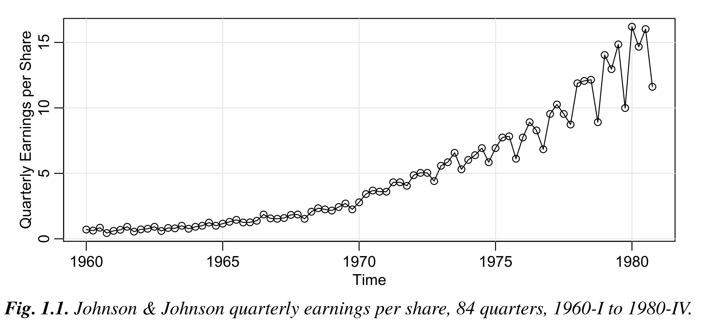
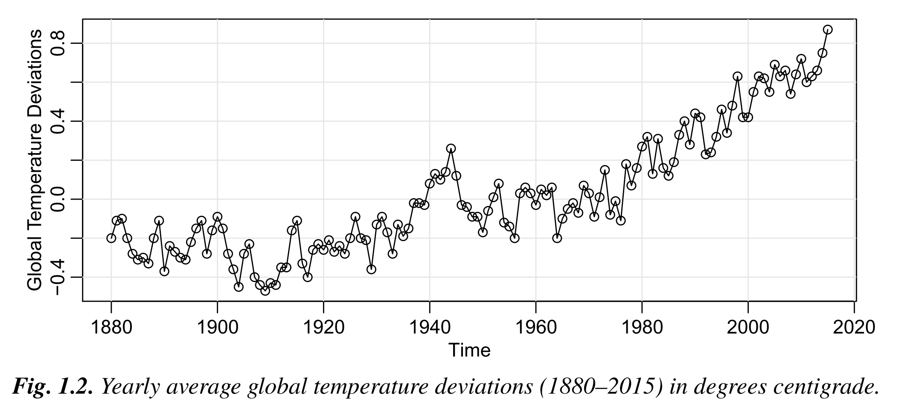
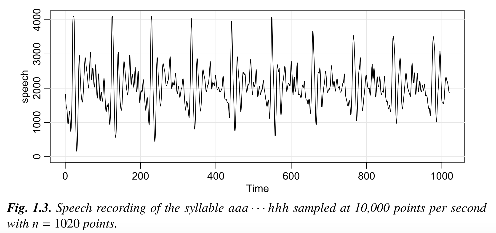
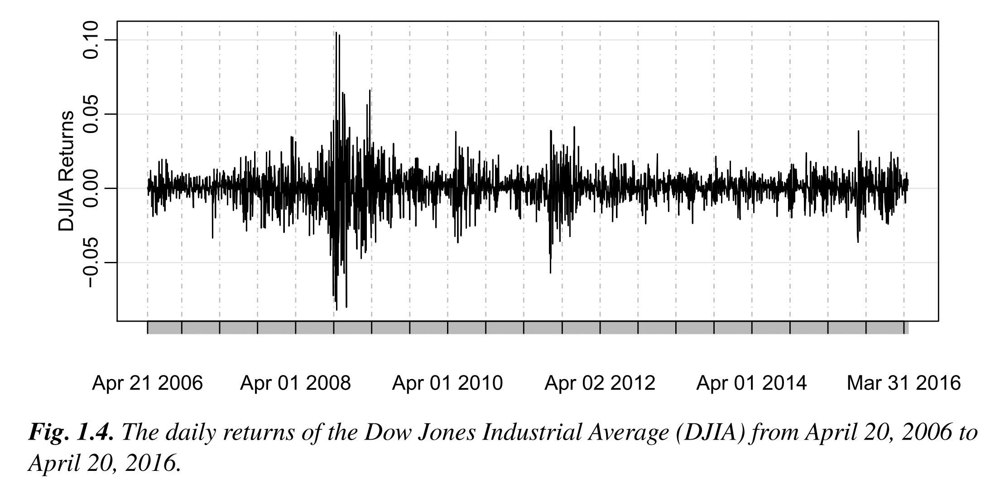
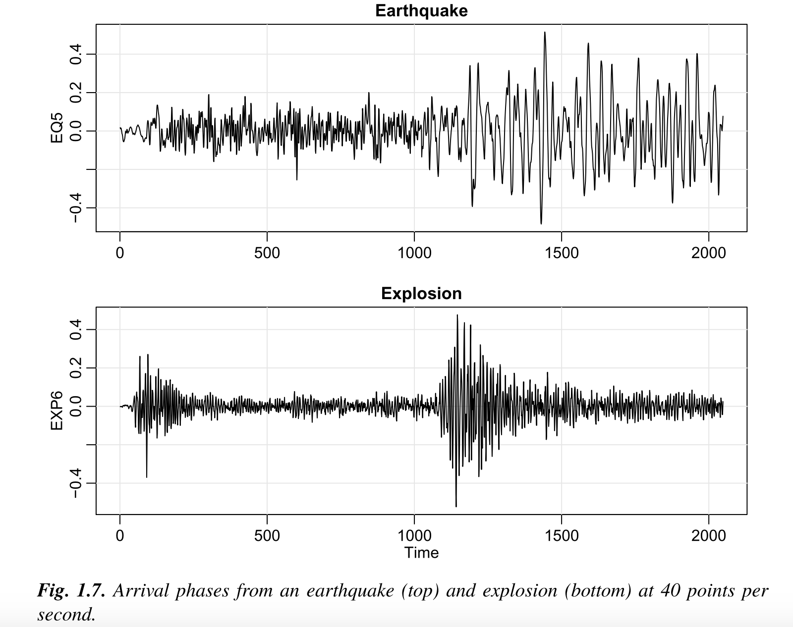

Basic Concepts¶
Source: Shumway et al. 2016. Time Series Analysis and Its Applications With R Examples.
Nature of Time Series¶
 21 years (84 quarters) are measured for Johnson & Johnson earnings. Modeling such series begins by observing the primary patterns in the time history. In this case, notice 1) the gradually increasing underlying trend and 2) the rather regular variation superimposed on the trend.
 The data are deviations in global temperature, measured in degrees centigrade, from the 1951-1980 average. Notice 1) an upward trend during the latter part of the twentieth century.  This is a sample of recorded speech for the phrase aaa · · · hhh. Notice 1) the repetitive nature of the signal and 2) the rather regular periodicities.  This is a sample of the daily returns (or percent change) of the Dow Jones Industrial Average. The mean of the series is stable with an average return of approximately zero, however, highly volatile (variable) periods tend to be clustered together. A problem in the analysis of these type of financial data is to forecast the volatility of future returns.  In this Figure you see two phases at a seismic recording station. The question is how to distinguish between waveforms from earthquakes and those generated by explosions.
Note
Two approaches:
Time Domain
how does what happened today affect what will happen tomorrow
Frequency Domain
what is the economic cycle through periods of expansion and recession
Time Series Model¶
Time Series
a collection of random variables indexed according to the order they are obtained in time: \(x_1\), \(x_2\), \(x_3\)
the values of the random variables are plotted on the vertical axis (Y) with the time scale as the horizontal axis (X)
continuous time series are observed at continuous points, discrete time series are sampled at equally spaced points in time
Trend - a long-term increase or decrease in the data. It does not have to be linear, it can be as “changing direction”
Seasonal - when a time series is affected by seasonal factors such as the time of the year or the day of the week. Seasonality is always of a fixed and known period.
Cyclic - when the data exhibit rises and falls that are not of a fixed frequency. These fluctuations are usually due to economic conditions, and are often related to the “business cycle.” The duration of these fluctuations is usually at least 2 years.
Time-Series FAQs¶
Source: Investopedia. 2021. Link
What Are Some Examples of Time Series?
A time series can be constructed by any data that is measured over time at evenly-spaced intervals. Historical stock prices, earnings, GDP, or other sequences of financial or economic data can be analyzed as a time series.
How Do You Analyze Time Series Data?
Statistical techniques can be used to analyze time series data in two key ways: to generate inferences on how one or more variables affect some variable of interest over time, or to forecast future trends. Unlike cross-sectional data, which is essentially one slice of a time series, the arrow of time allows an analyst to make more plausible causal claims.
What Is the Distinction Between Cross-Sectional and Time Series Data?
A cross-section looks at a single point in time, which is useful for comparing and analyzing the effect of different factors on one another or describing a sample. Time series involves repeated sampling of the same data over time. In practice, both forms of analysis are commonly used; and when available, are used together.
How Are Time Series Used in Data Mining?
Data mining is a that turns reams of raw data into useful information. By utilizing software to look for patterns in large batches of data, businesses can learn more about their customers to develop more effective marketing strategies, increase sales, and decrease costs. Time series, such as a historical record of corporate filings or financial statements, are particularly useful here to identify trends and patterns that may be forecasted into the future.